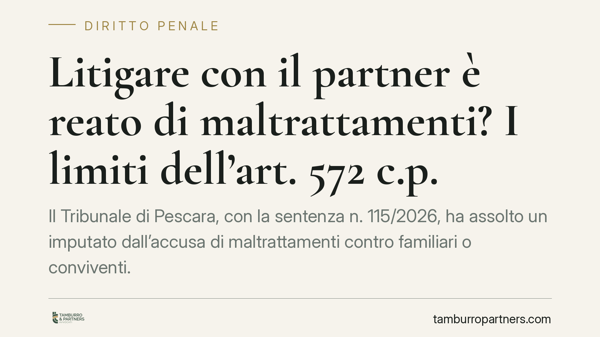

Litigare con il partner è reato di maltrattamenti? I limiti dell'art. 572 c.p.
Il Tribunale di Pescara, con la sentenza n. 115/2026, ha assolto un imputato dall'accusa di maltrattamenti contro familiari o conviventi. La decisione ribadisce un principio spesso frainteso: la conflittualità di coppia, per quanto accesa, non coincide con il reato previsto dall'art. 572 del codice penale, che richiede un regime di vita abitualmente vessatorio.

Il caso
Il Tribunale di Pescara è stato chiamato a valutare la condotta di un imputato accusato di maltrattamenti ai danni del partner. All'esito del giudizio, il collegio ha pronunciato sentenza di assoluzione (n. 115/2026), ritenendo che gli episodi contestati fossero riconducibili a una conflittualità contingente e non a un sistema di sopraffazione continuativo.
La pronuncia offre l'occasione per distinguere con precisione due piani che l'esperienza quotidiana tende a confondere: il contrasto, anche aspro, tra due persone che convivono, e il reato di maltrattamenti in senso tecnico.
Inquadramento normativo
L'art. 572 del codice penale punisce chi "maltratta una persona della famiglia o comunque convivente". La giurisprudenza di legittimità ha chiarito da tempo che si tratta di un reato abituale: non è sufficiente il singolo fatto, per quanto grave, ma occorre una pluralità di condotte che, nel loro insieme, diano vita a un regime di vita vessatorio e umiliante per la vittima.
La fattispecie richiede dunque due elementi concorrenti. Sul piano oggettivo, la sistematicità delle condotte prevaricatrici, protratte nel tempo. Sul piano soggettivo, la consapevolezza di sottoporre la persona offesa a sofferenze fisiche o morali in modo abituale, con la percezione di una posizione di dominio.
Manca il reato, invece, quando i comportamenti si esauriscono in liti episodiche, reciproche o legate a specifiche occasioni di tensione. In questi casi la condotta può eventualmente rilevare sotto altre e diverse figure (si pensi a singoli episodi di percosse o minaccia), ma non integra l'abitualità che l'art. 572 c.p. pretende.
Perché la distinzione conta
La differenza non è nominalistica. Il reato di maltrattamenti comporta una cornice sanzionatoria severa e conseguenze processuali rilevanti, a partire dalla procedibilità d'ufficio e dalla possibile applicazione di misure cautelari. Qualificare come maltrattamenti ciò che è, in realtà, una crisi di coppia conflittuale significherebbe estendere la fattispecie oltre i confini voluti dal legislatore.
Il Tribunale di Pescara, pretendendo la prova di un disegno vessatorio continuativo, non sminuisce la gravità delle condotte violente in ambito domestico. Afferma, piuttosto, che ciascuna fattispecie va qualificata per quello che è, evitando sia la sottovalutazione sia la sovra-contestazione.
Implicazioni pratiche
Per chi subisce comportamenti aggressivi in ambito familiare, la pronuncia conferma l'importanza di documentare la continuità delle condotte: è l'insieme ripetuto e prolungato, non l'episodio singolo, a fondare l'accusa di maltrattamenti.
Per chi si trova sul versante opposto, cioè destinatario di una denuncia, la decisione ricorda che la difesa può legittimamente puntare sulla natura occasionale e reciproca del conflitto, elemento idoneo a escludere l'abitualità.
In entrambi i casi, la ricostruzione dei fatti deve essere rigorosa. Testimonianze, certificati medici, messaggi, denunce precedenti: ogni elemento serve a collocare le condotte dentro – o fuori – dallo schema del reato abituale.
Cosa fare in concreto
- Raccogliete e conservate la documentazione rilevante (referti, messaggi, eventuali precedenti esposti), ordinata in sequenza cronologica.
- Annotate date e circostanze degli episodi, distinguendo i fatti isolati da eventuali condotte ripetute nel tempo.
- Valutate con un difensore la corretta qualificazione giuridica prima di presentare o ricevere una denuncia: scegliere la fattispecie adeguata incide sull'intero procedimento.
- Non sottovalutate le situazioni di rischio immediato: in presenza di violenza attuale, rivolgetevi senza indugio alle autorità competenti.
- Richiedete una consulenza tempestiva se siete coinvolti in un procedimento ex art. 572 c.p., sia come persona offesa sia come indagato.
La sentenza del Tribunale di Pescara non legittima la conflittualità, ma invita a non confondere i piani. La tutela delle vittime passa anche dalla precisione con cui i fatti vengono qualificati.
---
*Contributo informativo a cura di Tamburro & Partners - Avv. Giuseppe Tamburro. Non costituisce parere legale.*
Ogni condominio ha una storia a sé.
Se gestisci un'amministrazione e vuoi un confronto su una specifica questione condominiale, scrivi allo studio. Ti rispondiamo entro un giorno lavorativo.